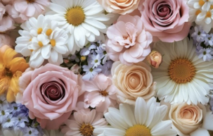

This page uses my supplied flower image to explore file formats, color, resizing, proportions, and image quality. Compare the petal edges and the fine details in the daisy centers as the same picture changes.
Pink Roses and White Daisies
I chose this flower arrangement because its soft colors fit my site and its detailed petals make changes in quality easy to compare. The image was supplied by me; the original photographer and source are unknown. The original is a PNG measuring 505 × 322 pixels, with a file size of 348,412 bytes (0.348 MB).
Original Image and Format Conversions
Each link opens the full-size file in a new tab. GIF reduces the color palette; grayscale keeps shades of gray, while black-and-white uses only two colors.
The untouched 505 × 322 original, displayed at its natural size when space permits.
Downsizing With CSS
The browser displays the original at 101 pixels wide, 20% of its original width. The full file still downloads; only its appearance changes.
Inline CSS changes the width to 101 pixels and calculates the height automatically.
Proper Reduction With an Editor
This separate file was resampled to 303 × 193 pixels. Since the original is only 505 pixels wide, a smaller copy is appropriate rather than an enlargement to 600 pixels. The width and height attributes reserve space while it loads.

A reduced copy with its proportions preserved to the nearest whole pixel.
Improper Proportions With CSS
Each step reduces one displayed dimension by 33%, then by 33% again. The other dimension stays at the 202 × 129 comparison size. The four examples stay side by side; scroll horizontally on a small screen.
Width reduced 33%; height unchanged.Width reduced another 33%; height unchanged.Height reduced 33%; width unchanged.Height reduced another 33%; width unchanged.
Improper Enlarging With CSS
The small copy contains only 126 × 81 pixels, about 25% of the original dimensions. Both files below display at 505 pixels wide when there is room. Enlarging the smaller copy cannot restore the discarded detail.
Original file at a displayed width of 505 pixels: inspect the petal edges.Quarter-size copy enlarged to the same displayed width: edges and flower centers lose definition.
Derivative Files and Download Sizes
Every converted or resized copy has a descriptive filename containing its dimensions, with width before height. The original remains unchanged. The source-unknown label avoids claiming a photographer or Pexels credit that has not been supplied.